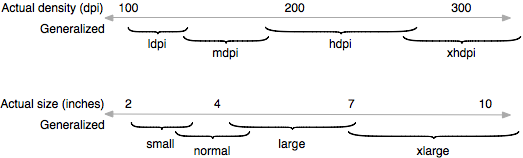
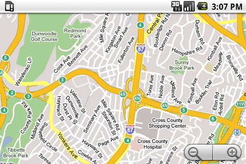
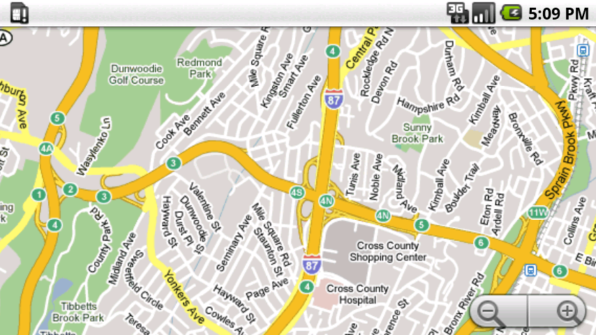
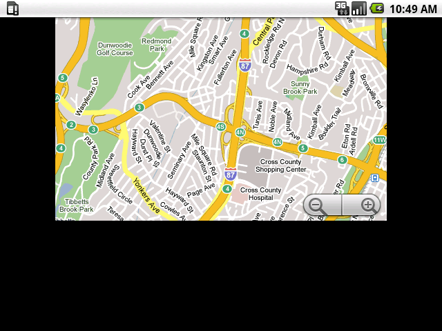
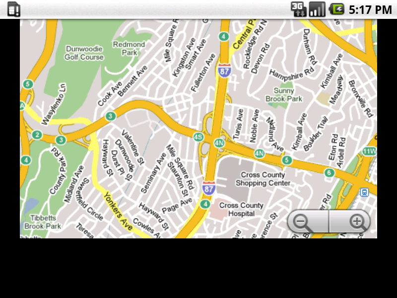
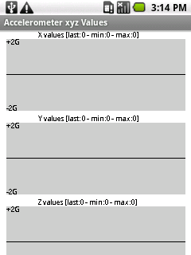
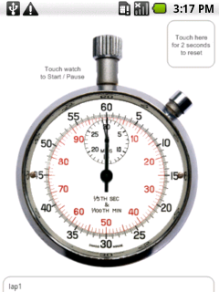
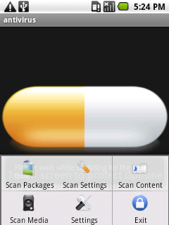

Android is designed to run on a variety of devices that offer a range of screen sizes and resolutions. For applications, the platform provides a consistent environment across devices and handles much of the complexity of adapting an application's UI to the screen on which it is being displayed. At the same time, the platform exposes APIs that give application developers precise control over their application's UI when displayed on specific screen sizes and resolutions.
This document explains the screens-support features provided by the platform
and how you use them in your application. By following the practices described
here, you can easily create an application that displays properly on all
supported device screens and that you can deploy to any device as a single .apk.
If you have already developed and published an application for Android 1.5 or earlier, you should read this document and consider how you may need to adapt your application for proper display on new devices that offer different screens and that are running Android 1.6 or later. In most cases, only minor adjustments are needed, however you should make sure to test your application on all supported screens.
Starting in Android 2.2, the platform includes support for extra high density screens (xhdpi), and starting in Android 2.3, the platform includes support for extra large screens (xlarge). If you've already followed the guidance in this document to support all other screen types, you should consider providing additional support for xhdpi and xlarge screens.
In particular, if you have an existing application that you would like to make available on small screens (such as QVGA) or for which you would like to provide better support for extra large screens, please see Strategies for Legacy Applications for more information about how to do that.
The sections below provide an overview of the Android platform's support for multiple screens, including an introduction to terms and concepts used in this document and in the API, a summary of the screen configurations that the platform supports, and an overview of the API and underlying screen-compatibility features.
For simplicity, Android collapses all actual screen sizes into four generalized sizes: small, normal, large, and extra large. Applications can provide custom layouts for each of these four sizes — the platform transparently handles the rendering of the layouts at the actual screen size.
long and notlong. A screen with lower density has fewer available pixels spread across the screen width and height, where a screen with higher density has more — sometimes significantly more — pixels spread across the same area. The density of a screen is important because, other things being equal, a UI element (such as a button) whose height and width are defined in terms of screen pixels will appear larger on the lower density screen and smaller on the higher density screen.
For simplicity, Android collapses all actual screen densities into four generalized densities: low, medium, large, and extra large. Applications can provide custom resources for each of these densities — the platform handles any necessary scaling of the resources up or down to meet the specific screen density.
The density-independent pixel is equivalent to one physical pixel on a 160
dpi screen, the baseline density assumed by the platform (as described later in
this document). At run time, the platform transparently handles any scaling of
the dp units needed, based on the actual density of the screen in use. The
conversion of dp units to screen pixels is simple: pixels = dps *
(density / 160)
Starting from Android 1.6, the platform provides support for multiple screen sizes and resolutions, reflecting the many new types and sizes of devices on which the platform runs. If you are developing an application that will run on Android 1.6 or later, you can use the compatibility features of the Android platform to ensure that your application UI renders properly across the range of supported screen sizes and resolutions.
To simplify the way that developers design their user interfaces for multiple devices and to allow more devices to participate without affecting applications, the platform divides the range of actual supported screen sizes and resolutions into:
Note: The xhdpi density category was added in
Android 2.2 (API Level 8). The xlarge size category was added in Android 2.3 (API Level
9).
Applications can provide custom resources (primarily layouts) for any of the four generalized sizes and can provide resources (primarily drawables such as images) for any of the four generalized densities. Applications do not need to work with the actual physical size or density of the device screen. At run time, the platform handles the loading of the correct size or density resources, based on the generalized size or density of the current device screen, and adapts them to the actual pixel map of the screen.
The generalized size/density configurations are arranged around a baseline configuration that is assigned a size of normal and a density of mdpi (medium). All applications written for Android 1.5 or earlier are (by definition) designed for the baseline HVGA screen used on the T-Mobile G1 and similar devices, which is size normal and density mdpi.
Each generalized screen configuration spans a range of actual screen densities and physical sizes. For example, that means that multiple devices that report a screen size of normal might offer screens that differ slightly in actual size or aspect ratio. Similarly, devices that report a screen density of hdpi might offer screens with slightly different pixel densities. The platform makes these differences abstract, however — applications can offer UI designed for the generalized sizes and densities and let the system handle the actual rendering of the UI on the current device screen according to its characteristics.
Figure 1. Illustration of how the Android platform maps actual screen densities and sizes to generalized density and size configurations.
Although the platform lets your application provide customized resources for the various size and density configurations, you do not need to do write custom code or provide custom resources for every combination of screen size and density. The platform provides robust compatibility features, described in the sections below, that can handle most of the work of rendering your application on any device screen, provided that you've implemented your application UI properly. For more information about how to implement a UI that renders properly across device screens and platform versions, see Best Practices for Screen Independence.
To help you test your applications, the Android SDK includes emulator skins that replicate the sizes and densities of actual device screens on which your application is likely to run. You can also modify the default size and density of the emulator skins to replicate the characteristics of any specific screen.
Table 1. Screen sizes and densities of emulator skins included in the Android SDK.
|
|
|
|
|
|
| Small screen | QVGA (240x320) | |||
| Normal screen | WQVGA400 (240x400) WQVGA432 (240x432) |
HVGA (320x480) | WVGA800 (480x800) WVGA854 (480x854) |
|
| Large screen | WVGA800* (480x800) WVGA854* (480x854) |
|||
| Extra Large screen | ||||
| * To emulate this configuration, specify a custom density of 160 when creating an AVD that uses a WVGA800 or WVGA854 skin. | ||||
For an overview of the relative numbers of high (hdpi), medium (mdpi), and low (ldpi) density screens in Android-powered devices available now, see the Screen Sizes and Densities dashboard.
The platform's support for loading screen size- and density-specific resources at run time is based on the alternative resources framework.
If you want to use size- or density-specific layouts or drawables in your application and you are not familiar with resource qualifiers or how the platform uses them, please read Providing Alternative Resources.
The foundation of Android's support for multiple screens is a set of built-in compatibility features that together manage the rendering of application resources in an appropriate way for the current device screen. The platform handles most of the work of rendering your application, but also gives you two key ways to control how your application is displayed, if you need or want to use them:
small, normal, large, and
xlarge. Those for density-specific resources are ldpi
(low), mdpi (medium), hdpi (high), and xhdpi (extra high).
The qualifiers correspond to the generalized densities described in
Range of screens supported, above.<supports-screens>
manifest element, whose attributes
android:smallScreens, android:normalScreens,
android:largeScreens, and android:xlargeScreens let you specify what
generalized screen sizes
your application supports. Another attribute, android:anyDensity,
lets you indicate whether or not your application includes built-in support for
multiple densities.At run time, the platform provides three types of support to your application, to ensure the best possible display on the current device screen:
Based on the density of the current screen, the platform automatically loads any size- or density-specific resources from your application and displays them without scaling. If no matching resources are available, the platform loads the default resources and scales them up or down as needed to match the current screen's generalized density. The platform assumes that default resources are designed for proper display at the baseline screen density of "medium" (160), unless they are loaded from a density-specific resource directory.
For example, if the current screen's density is "high", the platform loads
resources that are tagged with the qualifier hdpi and uses them
without scaling. If no such resources are available, the platform uses the
default resources instead, scaling them from the baseline density ("medium") to
"high".
For more information about how to create size- and density-specific resources, see Resource qualifiers.
If the application states that it does not support different screen densities, the platform auto-scales any absolute pixel coordinates, pixel dimension values, and pixel math used in the application (such as might be used for specifying the width or padding for a view). It does this to ensure that pixel-defined screen elements are displayed at approximately the same physical size as they would be at the baseline density of "medium" (160). The platform handles this scaling transparently to the application and also reports scaled overall pixel dimensions to the application, rather than physical pixel dimensions.
For instance, suppose a given device is using a WVGA high-denisty screen, which is 480x800 and about the same size as a traditional HVGA screen, but it's running an app that states that it does not support multiple densities. In this case, the system will "lie" to the application when it queries for screen dimensions, and report 320x533. Then, when the app does drawing operations, such as invalidating the rectangle from (10,10) to (100, 100), the system will likewise automatically transform the coordinates by scaling them the appropriate amount, and actually invalidate the region (15,15) to (150, 150). The same thing happens in the other direction, if the application is running on a lower-density screen, coordinates are scaled down.
For more information, see the android:anyDensity attribute in
Manifest attributes for screens support.

Publishing to Small Screen Devices
To ensure the best experience for users on small-screen devices, Android Market only shows applications that explicitly declare support for small screens. If you developed an application on Android 1.5 or earlier and published it on Android Market, you need to test your application on small screens and then upload an updated version that explicitly indicates support for small screens.
If the current screen's size is larger than your application supports, as
specified in the supports-screens element, the platform displays
the application at the baseline size ("normal") and density ("medium). For
screens larger than baseline, the platform displays the application in a
baseline-sized portion of the overall screen, against a black background.
For instance, suppose a given device is using a WVGA medium density screen, classified as a "large" screen, but the application states that it does not support large screens; in this case, the system will again "lie" to the application when it queries for screen dimensions, and report 320x480. Instead of scaling the application, however, the application's 320x480 interface will be placed as a "postage stamp" in the larger 480x800 screen.
For more information, see the android:anyDensity attribute in
Manifest elements for screens support and the
Screen-Compatibility Examples
section.
In general, these compatibility features ensure that all applications, including those written against Android 1.5 and earlier platform versions, can display properly on most devices, especially when the device's screen is at the baseline "normal" size or larger.
However, note that applications written for the baseline screen may need minor adjustments before they display properly on smaller screens such as QVGA. With the reduced screen area of small screens, there may be tradeoffs in design, content, and function that you, as the application developer, need to consider. For more information about how to prepare an existing application for display on small screens, see Strategies for Legacy Applications.
The sections below provide more information how to take advantage of the platform's multiple-screens support.
The goal of density independence is to preserve the physical size, from the user's point of view, of user interface elements declared in an application, when the application is displayed on screens with different densities. Density independence applies to both layouts and drawables such as icons. Maintaining density-independence is important because, other things being equal, a UI element (such as a button) whose height and width are defined in terms of screen pixels will appear physically larger on the lower density screen and smaller on the higher density screen. Such density-related size changes can cause problems in application layout, usability, and consistency with other applications installed on the device.
The platform provides density independence to applications by default. It does this in three ways:
android:anyDensity="false" in its
manifest)The example screens below illustrate the density independence provided by the platform. Note that both the layouts and launcher icons are displayed at the same physical sizes, although screen sizes, aspect ratios, and densities are different.
Figure 2. Examples of density independence on WVGA high density (left), HVGA medium density (center), and QVGA low density (right).
In most cases, you can take advantage of density independence in your
application simply by making sure that your layouts specify all dimension values
in density-independent pixels (dp or dp) or
scale-independent pixels (sip or sp, for text only).
If you are using absolute pixel values in the application and manifest includes
android:anyDensity="true", you will also need
to scale the pixel values. See Converting dp units to
pixel units for more information.
Android 1.6 introduced a new manifest element,
<supports-screens>,
whose attributes you can use to control the
display of your application on different classes of device screens, as listed
in table 2. The smallScreens, normalScreens, largeScreens and
xlargeScreens attributes correspond to the generalized screen sizes
described in Range of screens supported, earlier in this
document. Notice that the default values for each attribute vary, depending
on your minimum and targeted platform, as indicated in the android:minSdkVersion and android:targetSdkVersion attributes of your <uses-sdk>
manifest element.
Table 2. Summary of attributes for the <supports-screens> manifest element, including default values based on platform
version.
| Attribute | Description |
Default value, whenminSdkVersion ortargetSdkVersion is 4 or lower
|
Default value, whenminSdkVersion ortargetSdkVersion is 5 or higher
|
|---|---|---|---|
android:smallScreens
|
Whether or not the application UI is designed for use on
small screens — "true" if it is, and
"false" if not.
|
"false" |
"true" |
android:normalScreens
|
Whether or not the application UI is designed for use on
normal screens — "true" if it is, and
"false" if not. The default value is always "true".
|
"true" |
"true" |
android:largeScreens
|
Whether or not the application UI is designed for use on
large screens — "true" if it is, and
"false" if not.
|
"false" |
"true" |
android:anyDensity
|
Whether or not the application is designed to manage its UI properly
in different density environments — "
Note that the setting of this attribute affects density-compatibility only. It does not affect size-compatibility features such as display on a virtual baseline screen. |
"false" |
"true" |
Note: Android 2.3 (API Level 9) introduced a new
attribute for the <supports-screens> element: xlargeScreens, shown
below. It works the same as the other screen attributes above, but, if neither your
minSdkVersion or targetSdkVersion are set to "9", the default value is
"false" when your application is installed on a device running Android 2.3. |
|||
| Attribute | Description |
Default value, whenminSdkVersion ortargetSdkVersion is 8 or lower
|
Default value, whenminSdkVersion ortargetSdkVersion is 9 or higher
|
android:xlargeScreens
|
Whether or not the application UI is designed for use on
xlarge screens — "true" if it is, and
"false" if not.
|
"false" |
"true" |
In general, when you declare a screen-size attribute
(smallScreens, normalScreens, largeScreens, or
xlargeScreens) as "true", you are signaling to the
platform that your application is designed to render properly on that screen
size. As a result, the platform does not apply any size-compatibility features
(such as a virtual HVGA display area). If you declare a screen-size attribute as
"false", you are signaling that your application is not
designed for that screen size. In this case, the platform does apply
size-compatibility features, rendering the application in an HVGA baseline
display area. If the current screen is larger than normal size, the
platform renders the application in a virtual HVGA screen on the larger screen.
See Screen-Compatibility Examples for an
illustration of what an application looks like when displayed in a virtual HVGA
screen.
In other words, setting a <supports-screens> attribute to
"false" tells the platform to enable it's compatibility features
when displaying the application on a screen of that size or any larger
size, if also disallowed. Otherwise, the platform gives the application a
normal display area that can use the full device screen area, if
appropriate.
Android Market also makes use of the <supports-screens>
attributes. It uses them to filter the application from devices whose screens
are not supported by the application. Specifically, Android Market considers an
application compatible with a device if the application supports a screen that
is the same or smaller than the current device screen. Android Market filters
the application if it disallows the device's screen size and does not support a
smaller size. In general, Android does not provide downward size-compatibility
features for applications.
Here are some examples:
smallScreens="false" normalScreens="true"
largeScreens="false" xlargeScreens="false" in your application's manifest. Although the application is not designed for display on large or extra large screens, the platform can still run it successfully in screen-compatibility mode. Android Market shows the application to devices with normal, large, and xlarge size screens, but does filter it from small size screens, because the application provides no screen support at small size. Android's screen-compatibility mode mode does not provide support for screens that are smaller than those the application supports—it only provides support for screens that are larger. Thus, although the application declares "false" for large and xlarge screens, the application still functions, but runs in compatibility mode.
smallScreens="false" normalScreens="false"
largeScreens="true" xlargeScreens="true" in your application's manifest. Android Market filters the application from users of devices with small and normal size screens. In effect, this prevents such users from installing the application.
If you declare the android:anyDensity attribute as
"true", you are signaling to the platform that your application is
designed to display properly on any screen density. In this case, the
application must ensure that it declares its UI dimensions using
density-independent pixels (dp) and scales any absolute pixel
values (px) or math by the scaling factor available from android.util.DisplayMetrics.density. See Converting dp units to pixel units for an example.
Note that the setting of the android:anyDensity attribute does
not affect the platform's pre-scaling of drawable resources, such as bitmaps and
nine-patch images, which always takes place by default.
The following example shows a manifest that declares support for small, normal, large, and xlarge screens in any density.
<manifest xmlns:android="http://schemas.android.com/apk/res/android">
<supports-screens
android:smallScreens="true"
android:normalScreens="true"
android:largeScreens="true"
android:xlargeScreens="true"
android:anyDensity="true" />
...
</manifest>
The default values for the <supports-screens> attributes
differ, depending on the the value of the
android:minSdkVersion
attribute in the application's manifest, as well as on
the value of android:targetSdkVersion, if declared.
Above, table 2 indicates the default values for each attribute, based on
the values you provide for the android:minSdkVersion and android:targetSdkVersion, in the <uses-sdk>
element.
Note: If your application uses APIs introduced in Android 1.6 or
higher, but does not support specific screen densities and/or screen sizes, you need to explicitly
set the appropriate attributes to "false" (because most are "true", by default).
Android supports resource directory qualifiers for controlling the selection of resources based on the characteristics of the screen on which your application is running. You can use these qualifiers to provide size- and density-specific resources in your application. For more information about the generalized sizes and densities that correspond to the qualifiers, see Range of Screens Supported, earlier in this document.
| Screen characteristic | Qualifier | Description |
|---|---|---|
| Size | small |
Resources designed for small size screens. |
normal |
Resources designed for normal size screens. | |
large |
Resources designed for large size screens. | |
xlarge |
Resources designed for extra large size screens. | |
| Density | ldpi |
Resources designed for low-density (ldpi) screens. |
mdpi |
Resources designed for medium-density (mdpi) screens. | |
hdpi |
Resources designed for high-density (hdpi) screens. | |
xhdpi |
Resources designed for extra high-density (xhdpi) screens. | |
nodpi |
Density-independent resources. The platform does not auto-scale resources tagged with this qualifier, regardless of the current screen's density. | |
| Aspect ratio | long |
Resources for screens of any size or density that have a significantly taller (in portrait mode) and wider (in landscape mode) aspect ratio than the baseline screen configuration. |
notlong |
Resources for use only on screens that have an aspect ratio that is similar to the baseline screen configuration. | |
| Platform version | v<api-level> |
Resources that are for use only on a specific API Level or higher. For
example, if your application is designed to run on both Android 1.5 (API Level
3) and Android 1.6 (API Level 4 and higher), you can use the -v4
qualifier to tag any resources that should be excluded when your application is
running on Android 1.5 (API Level 3). |
Note that the density and the screen size are independent parameters and are interpreted by the system individually. For example, WVGA high density is considered a normal screen because its physical size is about the same as one of T-Mobile G1. On the other hand, a WVGA medium density screen is considered a large screen — it offers the same resolution but at lower pixel density, meaning that it is both physically larger than the baseline screen and can display significantly more information than a normal screen size.
Here is an example of the resource directory structure of an application that employs different layout schemes for different screen sizes and supports low and high density screens.
res/layout/my_layout.xml // layout for normal screen size res/layout-small/my_layout.xml // layout for small screen size res/layout-large/my_layout.xml // layout for large screen size res/layout-large-land/my_layout.xml // layout for large screen size in landscape mode res/layout-xlarge/my_layout.xml // layout for extra large screen size res/drawable-lhdpi/my_icon.png // image for low density res/drawable-mdpi/dpi/my_icon.png // image for medium density res/drawable-hdpi/my_icon.png // image for high density res/drawable-nodpi/composite.xml // density independent resource
For more information about how to use resource qualifiers or how the platform selects them, please read Providing Alternative Resources.
The objective of supporting multiple screens is to create an application that can run properly on any display and function properly on any of the generalized screen configurations supported by the platform.
You can easily ensure that your application will display properly on different screens. Here is a quick checklist:
wrap_content, fill_parent, or the dp unit (instead of px),
when specifying dimensions in an XML layout file
AbsoluteLayout
When defining the layout_width and layout_height of
views in an XML layout file, using wrap_content,
fill_parent or the dp will guarantee that the view is
given an appropriate size on the current device screen. For instance, a view
with a layout_width="100dp" will measure 100 pixels wide on an
HVGA@160 density display and 150 pixels on a WVGA@240 density display, but the
view will occupy approximately the same physical space.
Similarly, you should prefer the sp (scale-independent pixel,
the scale factor depends on a user setting) or dp (if you don't
want to allow the user to scale the text) to define font sizes.
AbsoluteLayout
is one of the layout containers offered by the Android UI toolkit. Unlike the
other layouts however, AbsoluteLayout enforces the use of fixed
positions which might easily lead to user interfaces that do not work well on
different displays. Because of this, AbsoluteLayout was deprecated
in Android 1.5 (API Level 3).
You can achieve much the same layout by using a
FrameLayout instead, and setting
layout_margin attributes of the children. This approach is more
flexible and will yield better results on different screens.
For performance reasons and to keep the code simpler, the Android framework
API uses pixels as the standard unit for expressing dimension or coordinate
values. That means that the dimensions of a View are always expressed in the
code in pixels. For instance, if myView.getWidth() returns 10, the
view is 10 pixels wide. In some cases, you may need to scale the pixel values
that you use in your code. The sections below provide more information.
In some cases, you will need to express dimensions in dp and
then convert them to pixels. Imagine an application in which a scroll gesture is
recognized after the user's finger has moved by at least 16 pixels. On a
baseline screen, the user will have to move his finger by 16 pixels / 160
dpi = 1/10th of an inch (or 2.5 mm) before the gesture is recognized. On a
device with a high (240) density display, the user will move his finger by only
16 pixels / 240 dpi = 1/15th of an inch (or 1.7 mm.) The distance is much
shorter and the application thus appears more sensitive to the user. To fix this
issue, the gesture threshold must be expressed in the code in dp
and then converted to actual pixels.
// The gesture threshold expressed in dp private static final float GESTURE_THRESHOLD_DP = 16.0f; // Convert the dps to pixels final float scale = getContext().getResources().getDisplayMetrics().density; mGestureThreshold = (int) (GESTURE_THRESHOLD_DP * scale + 0.5f); // Use mGestureThreshold as a distance in pixels
The android.util.DisplayMetrics.density
field specifies the the scale factor you must use to
convert dps to pixels according to the current screen density. You can access
the current screen's metrics through a Context or
Activity. On a medium (160) density screen,
DisplayMetrics.density equals "1.0", whereas on a high (240)
density screen it equals "1.5". You can refer to the documentation of the
DisplayMetrics
class for details.
The ViewConfiguration class can be
used to access the most common distances, speeds, and times used in the Android
framework. For instance, the distance in pixels used by the framework as the
scroll threshold can be obtained as follows:
ViewConfiguration.get(aContext).getScaledTouchSlop()
Methods starting with the getScaled prefix are guaranteed to return a value in pixels that will display properly regardless of the current screen density.
Figure 3. Comparison of pre-scaled and auto-scaled bitmaps.
Even with the size- and density-compatibility features that the platform provides, you may still want to make adjustments to the UI of your application when it displayed on certain screen sizes or densities. You can do this by providing size- or density-specific resources — assets, layouts, strings, and so on. If you want, you can also take control over the scaling of images assets. The sections below provide more information.
If you need to control exactly how your application will look on various displays, simply adjust your assets and layouts in configuration-specific resources directories. For example, consider an icon that you want to display on medium and high density screens. Simply create your icon at two different sizes (for instance 100x100 for medium density and 150x150 for high density) and put the two variations in the appropriate directories, using the proper qualifiers:
res/drawable-mdpi/icon.png //
for medium-density screens
res/drawable-hdpi/icon.png //
for high-density screens
If a density qualifier is not defined in a resource directory name, the platform assumes that the resources in that directory are designed for the baseline medium density. It is not recommended that you put density-specific resources such as images in the default directory.
For more information about valid resource qualifiers, see Resource directory qualifiers, earlier in this document.
When a bitmap or nine-patch image is loaded from the application's resources,
the platform attempts to pre-scale it to match the display's density. For
instance, if you placed a 100x100 icon in the res/drawable/
directory and loaded that icon as a bitmap on a high-density screen, Android
would automatically scale up the icon and produce a 150x150 bitmap.
This pre-scaling mechanism works independently of the source. For instance,
an application targeted for a high-density screen may have bitmaps only in the
res/drawable-hdpi/ directory. If one of the bitmaps is a 240x240
icon and is loaded on a medium-density screen, the resulting bitmap will measure
160x160.
The platform pre-scales resources as needed, whether the application is
running with density-compatibility features enabled or not (as specified by the
value of android:anyDensity). However, when running with
density-compatibility enabled, the platform continues to report the size of
pre-scaled bitmaps and other resources as if they were loaded in a
medium-density environment. For example, when density-compatibility is enabled,
if you load a 76x76 image from the default resources for display on a
high-density screen, the platform will pre-scale the image to 114x114
internally. However, the API still reports the size of the image as 76x76. This
discrepancy may cause unexpected behavior if your application somehow directly
manipulates the scaled bitmap, but this was considered a reasonable trade-off to
keep the performance of existing applications as good as possible.
This does not apply for the case that an application creates an in-memory bitmap internally and draws something on it, for later display on the screen. The platform auto-scales such bitmaps on the fly, at draw time. Other side effects of such a case might be that fonts drawn in such a bitmap will be scaled at the bitmap level, when the off-screen bitmap is finally rendered to the display, resulting in scaling artifacts.
There are situations in which you may not want Android to automatically scale a resource. The easiest way to accomplish this is to put it in a "nodpi" resource directory:
res/drawable-nodpi/icon.png
You can also take complete control of the scaling mechanism by using the
BitmapFactory.Options class,
which lets you define whether you want the bitmap to be pre-scaled and what the
density of the bitmap should be. For instance, if you are loading a bitmap from
a web server, you may want to force the bitmap's density to be high density.
When pre-scaling is disabled, the resulting bitmap is in auto-scaling mode. The
bitmap is associated with a density (that you may or may not have specified
through the BitmapFactory.Options) which will be used to scale the
bitmap on screen at drawing time.
Using auto-scaling instead of pre-scaling is more CPU expensive than
pre-scaling but uses less memory. You can refer to the documentation of
BitmapFactory,
Bitmap, and
Canvas for more
information on auto-scaling.
Figure 3, at right, demonstrates the results of the pre-scale and auto-scale mechanisms when loading low (120), medium (160) and high (240) density bitmaps on a baseline screen. The differences are subtle, because all of the bitmaps are being scaled to match the current screen density, however the scaled bitmaps have slightly different appearances depending on whether they are pre-scaled or auto-scaled at draw time.
If you have already developed and published an Android application based on Android 1.5 or earlier platform version, you need to consider how you will adapt your application so that it is deployable to:
Note: Even if your application targets Android 1.6 already, you should follow the same strategies below in order to support xhdpi and xlarge screens on Android 2.3 (API Level 9), while maintaining compatibility with older versions of the platform.
To support the newer devices and the different screens they use, you might
need to make some changes in your app, but at the same time your app may be very
stable and so you want to minimize the changes. There are a variety of ways that
you can extend your existing application to support new devices with multiple
screens and existing devices running older platform versions. You
should be able to make these changes to your application such that you can
distribute a single .apk to all devices.
The recommended strategy is to develop against the most recent version of the platform you are targeting, and test on the minimum platform version you want to run on. Here's how to do that:
android:minSdkVersion attribute as it is. You do not need
to increment the value of the attribute to support new devices and multiple
screens. android:targetSdkVersion — to the
uses-sdk element. Set the value of the attribute to
"4". [To support xhdpi and xlarge screens, set the value to
"9".] This allows your application to "inherit" the platform's
multiple screens support, even though it is technically using an earlier version
of the API. <supports-screens> element as a child of
<manifest>. If you need to enable size or density attributes
later, this is where you will add them.android:minSdkVersion. You need AVDs running the older
platforms you are targeting, so that
you can test for compatibility and ensure that there are no functional
regressions. android:minSdkVersion. If you
are in doubt, refer to SDK reference documentation and look for the API Level specifier for the API
you want to use. Using newer APIs not supported by your minimum version will mean that your
application will no longer be compatible with devices running on that version.anyDensity="false" attribute to
<supports-screens>, to enable density-compatibility
scaling.v<api-level>
qualifier (for example, -v4 to target API Level 4). This ensures that those resources
will be ignored when the application is run on Android 1.5 or lower platform
versions.largeScreens="false" and xlargeScreens="false" attributes to the
<supports-screens> element in the manifest. See
Screen-Compatibility Examples for
illustrations of how the platform displays your application in this case.smallScreens="false" attribute to the
<supports-screens> element. In particular, remember to test your application on an AVD that emulates a small-screen device. Devices that offer screens with QVGA resolution at low density are available now. Users of those devices may want to download your application, so you should understand how your application will look and function on a small-screen device. In many cases, the reduced screen area and density mean that you may need to make tradeoffs in design, content, and function on those devices.
Also give extra attention to testing your application on an AVD that emulates an xlarge
screen. Devices with extra large screens
are tablet-sized or larger, so you should pay close attention to how usable your application is on
such screens. You might want to design new layouts specifically for extra large screens, to address
usability aspects such as the location and size of buttons in your UI. To test your application on
an extra large screen, create an AVD targeted to Android 2.3 with a high resolution, such as 1280 x
800, and the default density of 160dpi. This AVD will use any resources you've provided with the
xlarge resouce qualifier.
Before publishing an application that supports multiple screens, you should thoroughly test it in all of the targeted screen sizes and densities. You can test how it displays with the platform's compatibility features enabled or with screen-specific UI resources included in your application. The Android SDK includes all the tools you need to test your application on any supported screen.
Figure 4. A typical set of AVDs for testing screens support.
As a test environment for your applications, set up a series of AVDs that
emulate the screen sizes and densities you want to support. The Android SDK
includes several emulator skins to get you started. You can use the Android AVD
Manager or the android tool to create AVDs that use the various
emulator skins and you can also set up custom AVDs to test densities other than
the defaults. For general information about working with AVDs, see
Android Virtual
Devices.
The Android SDK provides a set of default emulator skins that you can use for testing. The skins are included as part of each Android platform that you can install in your SDK. The Android 1.6 platform offers these default skins:
The Android 2.0 platform offers all of the Android 1.6 default skins, above, plus:
If you are using the android tool command line to create your
AVDs, here's an example of how to specify the skin you want to use:
android create avd ... --skin WVGA800
We also recommend that you test your application in an emulator that is set
up to run at a physical size that closely matches an actual device. This makes
it a lot easier to compare the results at various resolutions and densities. To
do so you will need to know the approximate density, in dpi, of your computer
monitor (a 30" Dell monitor has for instance a density of about 96 dpi.). Use
your monitor's dpi as the value of the -scale option, when
launching the emulator, for example:
emulator -avd <name> -scale 96dpi
If you are working in Eclipse with ADT, you can specify the -scale
96dpi option in the Target tab of run and debug configurations, under
"Additional Emulator Command Line Options" field.
Note that starting the emulator with the -scale option will
scale the entire emulator display, based on both the dpi of the skin and of your
monitor. The default emulator skins included in the Android SDK are listed
in Table 1, earlier in this document.
Figure 5. Resolution and density options that you can use, when creating an AVD using the AVD Manager.
You should also make sure to test your application on different physical
screen sizes within a single size-density configuration. For example, to
display this screen configuration on a 30" monitor you will need to adjust
the value passed to -scale to 96*2.8/3.3 = 81dpi. You can also
pass a float value to -scale to specify your own scaling factor:
emulator -avd <name> -scale 0.6
If you would like to test your application on a screen that uses a resolution or density not supported by the built-in skins, you can either adjust an existing skin, or create an AVD that uses a custom resolution or density.
In the AVD Manager, you can specify a custom skin resolution or density in the Create New AVD dialog, as shown in Figure 5, at right.
In the android tool, follow these steps to create an AVD with a
custom resolution or density:
create avd command to create a new AVD, specifying
the --skin option with a value that references either a default
skin name (such as "WVGA800") or a custom skin resolution (such as 240x432).
Here's an example:
android create avd -n <name> -t <targetID> --skin WVGA800
In the example above (WVGA medium density), the new AVD will emulate a 5.8" WVGA screen.
As an alternative to adjusting the emulator skin configuration, you can use
the emulator skin's default density and add the -dpi-device option
to the emulator command line when starting the AVD. For example,
emulator -avd WVGA800 -scale 96dpi -dpi-device 160
This section provides examples of how the Android platform displays an application written for the baseline screen configuration — HVGA (320x480) resolution on a 3.2" screen — with all of the platform's size- and density-compatibility features enabled. That is, the examples show how the platform displays an application that doesn't provide built-in support for the screen on which it is being rendered, but which instead relies completely on the platform.
The platform's screen-compatibility features are designed to provide such an application with a virtual baseline screen environment against which to run, while at the same time ensuring for the user a physical display that is approximately the same as the baseline screen size and density.
Legacy applications that have not been modified to support multiple screens would be typical examples of such applications. In most cases, you would want to add multiple-screens support to a legacy application and publish an updated version, as described in Strategies for Legacy Applications. However, if you did not do so, the platform still performs best-effort rendering of your application, as illustrated below.
Internally, these are the compatibility features that the platform provides, based on the current device screen:
|
HVGA, normal size, normal density [ emulator -skin HVGA ]  |
WVGA, normal size, high density [emulator -skin WVGA854 -dpi-device 240]  The application occupies full screen as its considered to be normal size. (close to 480x720) |
|
VGA, large size, medium density [ emulator -skin 640x480 ]  The application occupies 320x480 of VGA. |
SVGA, large size, high density [ emulator -skin 800x600 -dpi-device 240]  The application occupies 480x720 (=1.5 x [320x480]) of 800x600. |
Because these device has smaller state/resolution, there are known limitations when application runs in compatibility mode.
Because QVGA (240x320) screens have less screen area available and lower density than normal, which is 240x360 in low density, some applications cannot render all their content properly on those screens. As a result, on a QVGA device, Android Market will filter out all applications that do not declare they support small screens.
Examples:
| The part of z value graph is chopped. | The lap time area is chopped. |
|  |  |
If an image has 1 pixel height or width, it may not be shown on the screen due to rounding issue. This is inevitable as it just does not have enough pixels.
For example, in the screen below, the divider in the menu is invisible because the width of the image is trancated to 0. (This particular problem is solvable because menu is handled inside framework, but there is no generic solution as it just does not have enough pixels.)
